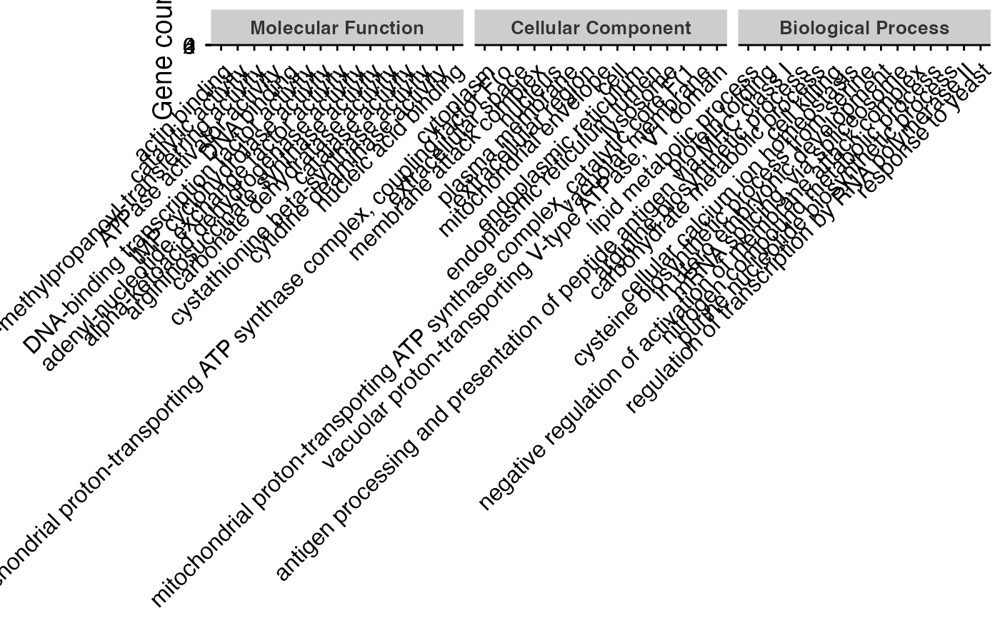
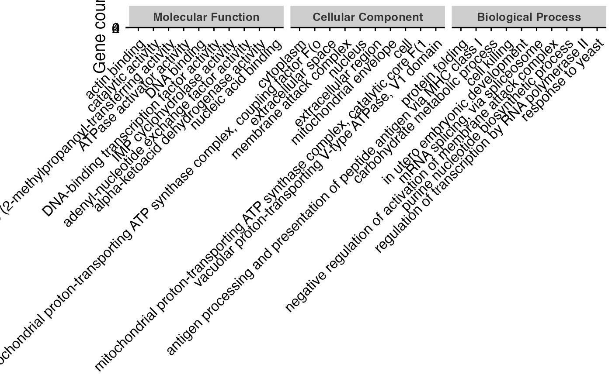
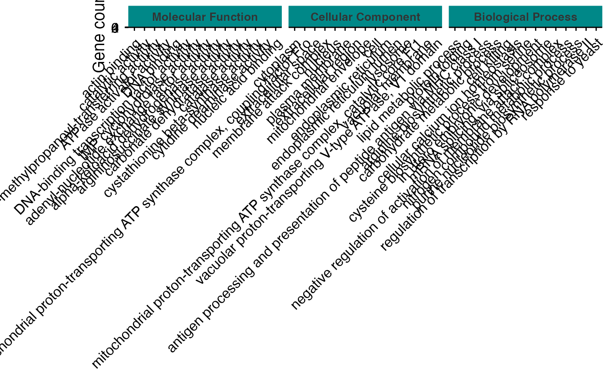

GO enrichment analysis and stat plot (None/Exist Reference Genome).
Source:R/go_enrich_stat.R
go_enrich_stat.RdGO enrichment analysis and stat plot (None/Exist Reference Genome).
Usage
go_enrich_stat(
go_anno,
degs_list,
padjust_method = "fdr",
pvalue_cutoff = 0.05,
qvalue_cutoff = 0.05,
max_go_item = 15,
strip_fill = "#CDCDCD",
xtext_angle = 45,
sci_fill_color = "Sci_AAAS",
sci_fill_alpha = 0.8,
ggTheme = "theme_publication"
)Arguments
- go_anno
Dataframe: GO and KEGG annotation of background genes (1st-col: Genes, 2nd-col: biological_process, 3rd-col: cellular_component, 4th-col: molecular_function, 5th-col: kegg_pathway).
- degs_list
Dataframe: degs list.
- padjust_method
Character: P-value adjust to Q-value. Default: "fdr" (false discovery rate), options: "holm", "hochberg", "hommel", "bonferroni", "BH", "BY", "fdr", "none".
- pvalue_cutoff
Numeric: P-value cutoff. Recommend: small than 0.05.
- qvalue_cutoff
Numeric: Q-value cutoff. Recommend: small than 0.05.
- max_go_item
Numeric: max BP/CC/MF terms. Default: 15, min: 1, max: NULL.
- strip_fill
Character: strip fill color (color name or hex value). Default: "#CDCDCD".
- xtext_angle
Numeric: x axis texts angle. Default: 45, min: 0, max: 360.
- sci_fill_color
Character: ggsci color pallet. Default: "Sci_AAAS", options: "Sci_AAAS", "Sci_NPG", "Sci_Simpsons", "Sci_JAMA", "Sci_GSEA", "Sci_Lancet", "Sci_Futurama", "Sci_JCO", "Sci_NEJM", "Sci_IGV", "Sci_UCSC", "Sci_D3", "Sci_Material".
- sci_fill_alpha
Numeric: ggsci fill color alpha. Default: 0.80, min: 0.00, max: 1.00.
- ggTheme
Character: ggplot2 themes. Default: "theme_publication", options: "theme_default", "theme_bw", "theme_gray", "theme_light", "theme_linedraw", "theme_dark", "theme_minimal", "theme_classic", "theme_void"
Examples
# 1. Library TOmicsVis package
library(TOmicsVis)
# 2. Use example dataset
data(gene_go_kegg)
head(gene_go_kegg, 10)
#> Genes
#> 1 FN1
#> 2 14-3-3ZETA
#> 3 A1I3
#> 4 A2M
#> 5 AARS
#> 6 ABAT
#> 7 ABCB7
#> 8 ABCG2
#> 9 ABCG5
#> 10 ABHD6-A
#> biological_process
#> 1 GO:0003181(atrioventricular valve morphogenesis);GO:0003128(heart field specification);GO:0001756(somitogenesis)
#> 2 <NA>
#> 3 <NA>
#> 4 <NA>
#> 5 GO:0006419(alanyl-tRNA aminoacylation)
#> 6 GO:0009448(gamma-aminobutyric acid metabolic process)
#> 7 <NA>
#> 8 <NA>
#> 9 <NA>
#> 10 <NA>
#> cellular_component
#> 1 GO:0005576(extracellular region)
#> 2 <NA>
#> 3 GO:0005615(extracellular space)
#> 4 GO:0005615(extracellular space)
#> 5 GO:0005737(cytoplasm)
#> 6 <NA>
#> 7 GO:0016021(integral component of membrane)
#> 8 GO:0043190(ATP-binding cassette (ABC) transporter complex)
#> 9 GO:0016021(integral component of membrane)
#> 10 GO:0016021(integral component of membrane)
#> molecular_function
#> 1 <NA>
#> 2 GO:0019904(protein domain specific binding)
#> 3 GO:0004866(endopeptidase inhibitor activity)
#> 4 GO:0004866(endopeptidase inhibitor activity)
#> 5 GO:0004813(alanine-tRNA ligase activity);GO:0005524(ATP binding);GO:0000049(tRNA binding);GO:0008270(zinc ion binding)
#> 6 GO:0003867(4-aminobutyrate transaminase activity);GO:0030170(pyridoxal phosphate binding)
#> 7 GO:0005524(ATP binding);GO:0016887(ATPase activity);GO:0042626(ATPase-coupled transmembrane transporter activity)
#> 8 GO:0005524(ATP binding);GO:0016887(ATPase activity);GO:0042626(ATPase-coupled transmembrane transporter activity)
#> 9 GO:0005524(ATP binding);GO:0016887(ATPase activity)
#> 10 <NA>
#> kegg_pathway
#> 1 ko04810(Regulation of actin cytoskeleton);ko04510(Focal adhesion);ko04151(PI3K-Akt signaling pathway);ko04512(ECM-receptor interaction)
#> 2 ko04110(Cell cycle);ko04114(Oocyte meiosis);ko04390(Hippo signaling pathway);ko04391(Hippo signaling pathway -fly);ko04013(MAPK signaling pathway - fly);ko04151(PI3K-Akt signaling pathway);ko04212(Longevity regulating pathway - worm)
#> 3 ko04610(Complement and coagulation cascades)
#> 4 ko04610(Complement and coagulation cascades)
#> 5 ko00970(Aminoacyl-tRNA biosynthesis)
#> 6 ko00250(Alanine, aspartate and glutamate metabolism);ko00280(Valine, leucine and isoleucine degradation);ko00650(Butanoate metabolism);ko00640(Propanoate metabolism);ko00410(beta-Alanine metabolism);ko04727(GABAergic synapse)
#> 7 ko02010(ABC transporters)
#> 8 ko02010(ABC transporters);ko04976(Bile secretion)
#> 9 ko02010(ABC transporters);ko04976(Bile secretion);ko04975(Fat digestion and absorption)
#> 10 ko04723(Retrograde endocannabinoid signaling)
# 3. Default parameters
go_enrich_stat(gene_go_kegg[,-5], gene_go_kegg[100:200,1])

# 4. Set padjust_method = "BH"
go_enrich_stat(gene_go_kegg[,-5], gene_go_kegg[100:200,1], padjust_method = "BH")
# 5. Set max_go_item = 10
go_enrich_stat(gene_go_kegg[,-5], gene_go_kegg[100:200,1], max_go_item = 10)

# 6. Set strip_fill = "#008888"
go_enrich_stat(gene_go_kegg[,-5], gene_go_kegg[100:200,1], strip_fill = "#008888")

# 7. Set sci_fill_color = "Sci_JAMA"
go_enrich_stat(gene_go_kegg[,-5], gene_go_kegg[100:200,1], sci_fill_color = "Sci_JAMA")